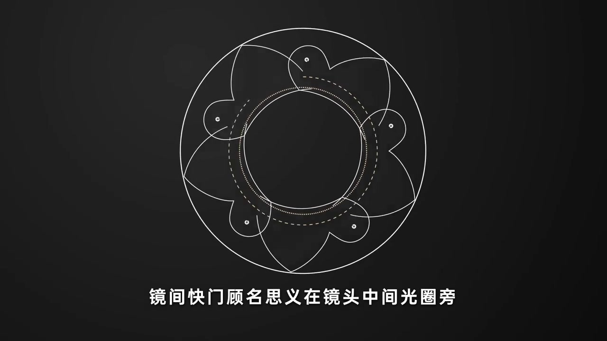
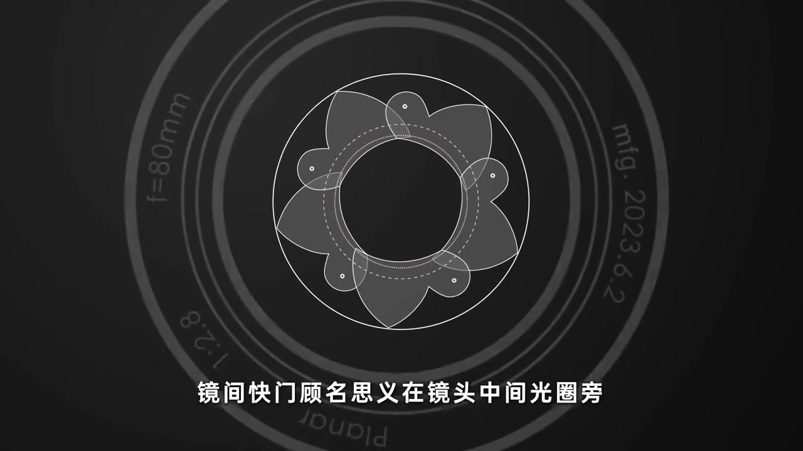
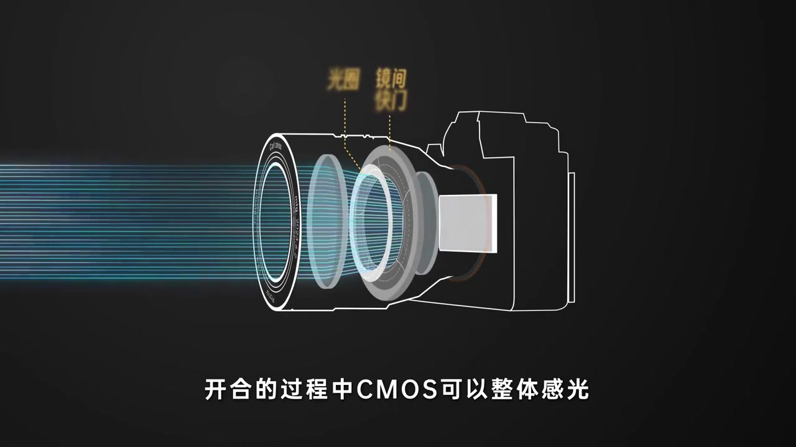
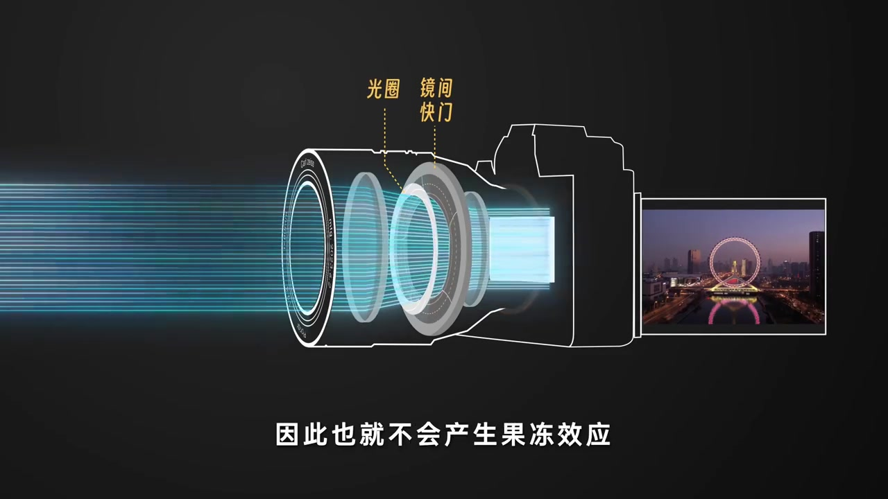
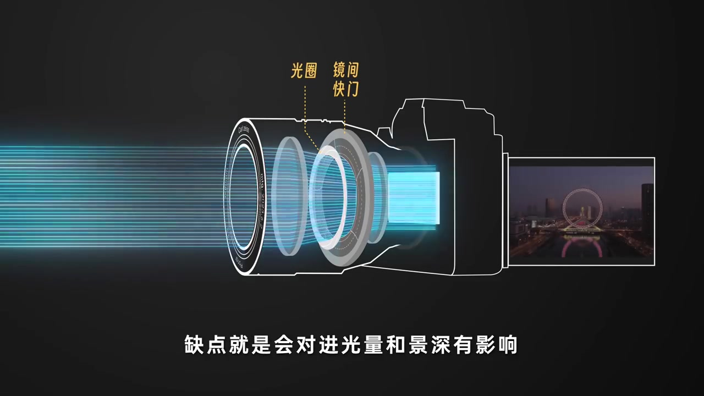
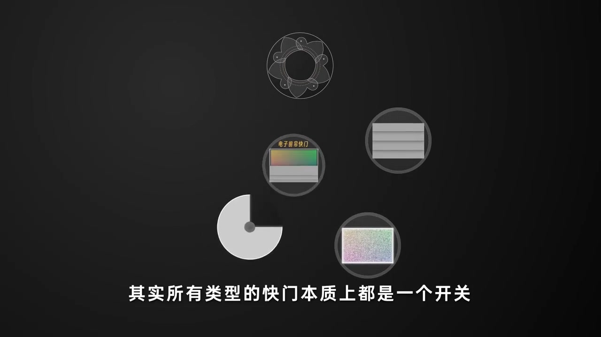
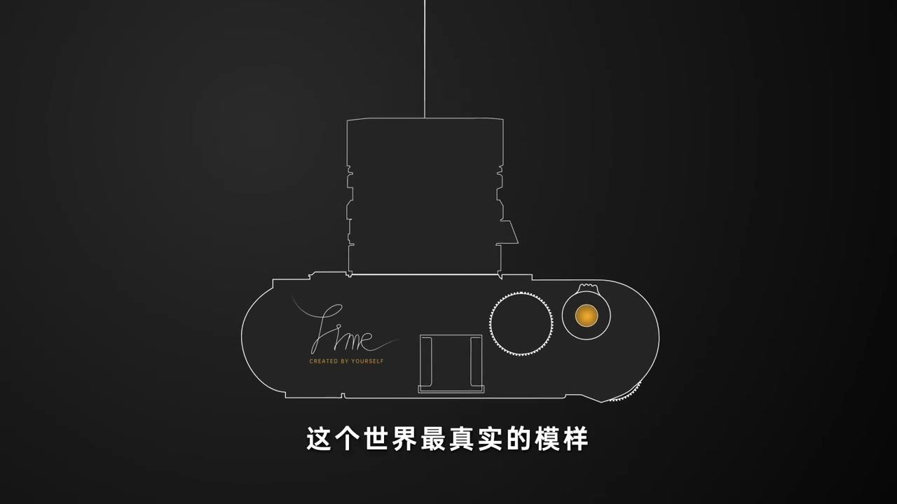

开场：镜间快门顾名思义在镜头中间
深灰底上先出现五叶瓣状的圆形机构线稿，旁白开门见山：镜间快门，顾名思义在镜头中间、光圈旁。笔记文案也把悬念写得很直白——明明是快门，为什么这个长得像光圈一样？
画面字幕：「镜间快门顾名思义在镜头中间光圈旁」
说明：Whisper 常把「镜间快门」识成「今天换门 / 换门」，「进光量」识成「金光量」，「更换复杂」识成「冬换复杂」。下文叙述以可见字幕与动画画面为准；页面末尾仍完整保留全部 Whisper 分段。

结构：和光圈有些相似
镜头前组线稿叠出 Carl Zeiss / Planar / f=80mm / 1:2.8 一类铭文，中央仍是那组可开合的叶片。旁白补一句：其结构和光圈也有些相似——这也解释了文案里「长得像光圈」的直觉。
旁白要点：结构和光圈相似；由于它在镜头内部……

关键优势：开合过程中 CMOS 可以整体感光
画面切到侧视光路：青色平行光线穿过镜片，黄字标出「光圈」与「镜间快门」，右侧是相机机身与 CMOS。旁白强调：因为它在镜头内部，开合过程中 CMOS 可以整体感光，不存在时间差。
画面字幕：「开合的过程中CMOS可以整体感光」

结果：因此也就不会产生果冻效应
同一光路图右侧出现夜景摩天轮取景屏。旁白把推论说完：没有时间差，也就不会产生果冻效应；其开合速度通常也更快。
画面字幕：「因此也就不会产生果冻效应」

代价：进光量、景深，以及很高的硬件要求
光路图继续停留，字幕转向缺点：会对进光量和景深有影响；对硬件的要求也很高，更换复杂。叶瓣机构嵌在镜头内部，维修与设计空间都被挤压——这是本集给出的明确代价清单。
画面字幕：「缺点就是会对进光量和景深有影响」

所以这种快门的应用并不常见
旁白把利弊收束成一句现实判断：所以这种快门的应用并不常见。动画仍停在标有光圈与镜间快门的侧视图上，让「优势很强、落地很少」形成对照。
画面字幕：「所以这种快门的应用并不常见」
拔高一层：所有类型的快门本质上都是一个开关
画面换成五种圆形图标：叶瓣式、电子前帘、机械幕帘、旋盘式，以及另一类电子/噪声示意。旁白跳出单一机型：其实所有类型的快门，本质上都是一个开关——一个控制时间的开关。
画面字幕：「其实所有类型的快门本质上都是一个开关」

收尾：更精确地还原按下快门那一刻
最后落在俯视相机线稿与黄橙色快门钮上。旁白把技术课收成一句纪实目的：让相机更精确地还原我们按下快门的那一刻，这个世界最真实的模样。
画面字幕：「这个世界最真实的样子」
